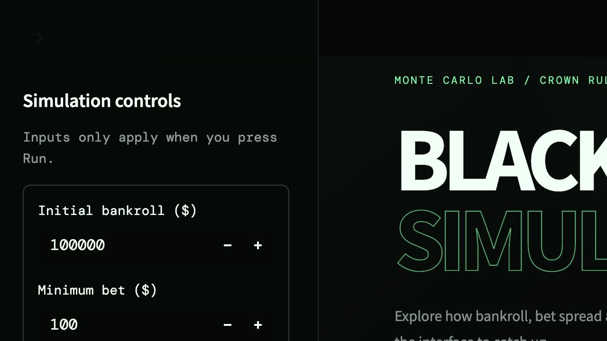
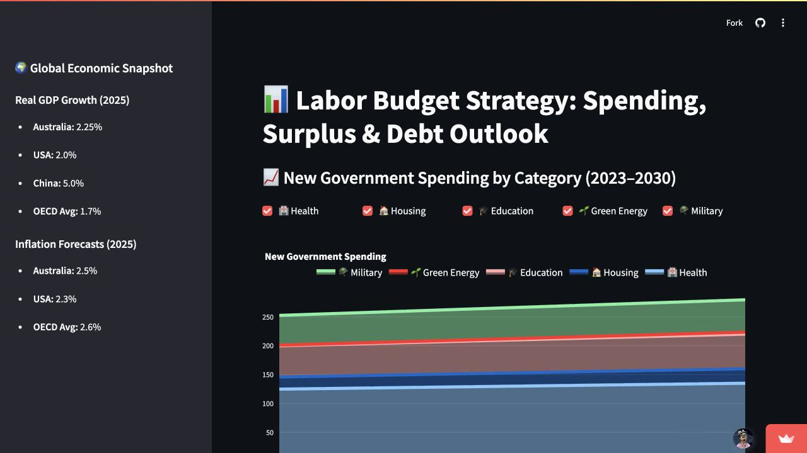
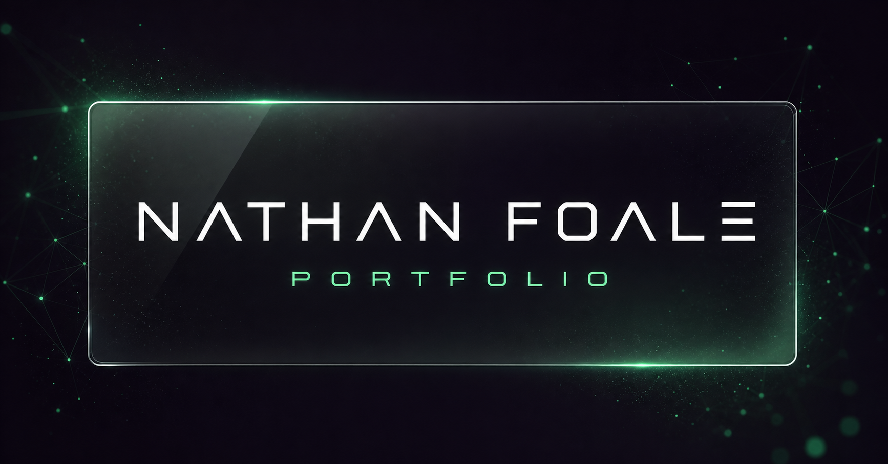

Websites &
digital presence
Modern, responsive websites and landing pages that make a business or idea clear, credible and easy to find.
- Business websites
- Landing pages
- Portfolio sites
Independent builder / Available for selected projects
I build websites, lightweight applications and AI-assisted workflows for small businesses, family-run companies and people with an idea they want to bring to life.
01 Websites
02 Custom tools
03 AI workflows
04 Data & quantitative
Services / What I can build
Every project starts with the outcome. The technology comes second.
Modern, responsive websites and landing pages that make a business or idea clear, credible and easy to find.
Focused calculators, dashboards and lightweight applications designed around a real, specific problem.
Useful GPTs and practical automations that support research, content or repetitive business processes.
Simulations, visualisations and analytical tools informed by my econometrics and actuarial background.
Selected builds / Proof of work
A few examples of how I approach design, problem-solving and development.

Custom tool / Financial planning

Simulation / Monte Carlo

Data visualisation / Economics

Website / Creative development
Process / From idea to launch
Direct collaboration, visible progress and no unnecessary layers.
Clarify the problem, audience and result the project needs to create.
Build something tangible early so the direction can be tested quickly.
Improve the design and behaviour through focused, practical feedback.
Deploy the finished product and provide a straightforward handover.
A good fit / If you need
Have something in mind?
Tell me what you’re trying to build, improve or automate. A rough idea is enough to start.
Start a conversation natfoale@gmail.com